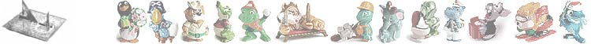
Kinder
http://sbor.kylt.ru/kinder/ - Каталог игрушек и сборок, игрушек раскрашенных в ручную.
- TAO TAO - 1984
- 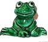 СЧАСТЛИВЫЕ ЛЯГУШКИ - 1986
- 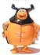 ПЧЕЛКА MAЯ - 1986
- 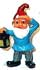 ГНОМЫ ЦВЕТОЧНОГО ГОРШКА - 1988
- 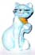 КОШКИ АРИСТОКРАТЫ - 1989
- 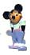 МИККИ И ДРУЗЬЯ - 1989
- 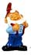 НОВЫЕ ГНОМЫ ЦВЕТОЧНОГО ГОРШКА - 1989
- 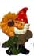 ЕЩЕ ГНОМЫ ЦВЕТОЧНОГО ГОРШКА - 1989
- 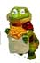 ГОРОД КРОКОС - 1990 пресутствуют в российских коллекциях
- 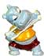 СЧАСТЛИВЫЕ ХИППОС В СПОРТИВНОЙ ЛИХОРАДКЕ - 1990
- 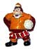 ФУТБОЛИСТЫ - 1990
- 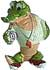 СУМАШЕДШИЕ КРОКОС- 1991 продажи в России с 1993 г.
- ЧЕРЕПАШКИ - 1991 пресутствуют в российских коллекциях
- 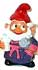 ВАННАЯ ГНОМОВ - 1991 пресутствуют в российских коллекциях
- 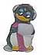 СТРАННЫЕ ПИНГОС - 1992 пресутствуют в российских коллекциях
- 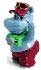 ПРАЗДНИК СЧАСТЛИВЫХ ХИППОС - 1992 продажи в России с 1995 г.
- 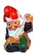 ГНОМЫ РАБОЧИЕ - 1992 пресутствуют в российских коллекциях
- 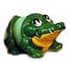 ШАРОВЫЕ ЖИВОТНЫЕ - 1993 продажи в России с 1995 г.
- 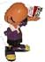 ЧЕРВЯЧКИ - 1993
- 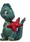 ЗАБАВНЫЕ ДИНОС-1993
- 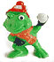 ЗИМНИЕ ЛЯГУШАТА - 1993 продажи в России с 1997 г.
- 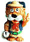 ЛЕО ВЕНТУРАС - 1993 продажи в России с 1994 г.
- 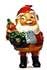 ЧЕТЫРЕ СЕЗОНА ГНОМОВ - 1994 пресутствуют в российских коллекциях
- 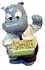 СЧАСТЛИВАЯ КОМПАНИЯ ХИППО - 1994
- 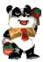 ПАРТИЯ ПАНДЫ - 1994 пресутствуют в российских коллекциях
- 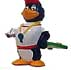 БЕРЕГ ЭНЕРГИЧНЫХ ПИНГО - 1994
- 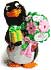 ПАРТИЯ ЭНЕРГИЧНЫХ ПИНГО-1994 продажи в России с 1996 г.
- 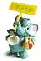 ВЕСЕЛЫЕ СЛОНИКИ - 1995 продажи в России с 1998 г.
- 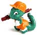 ЗАБАВНЫЕ ДИНОС НА СТРОЙКЕ - 1995 продажи в России с 1997 г.
- 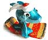 АКУЛЯТА ШАЛИБАБА - 1995 продажи в России с 1997 г.
- 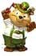 ДЕСЯТЬ ТЕДДИ - 1995
- 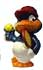 ПТИЧИЙ ТЕННИС - 1996
- 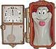 ЯРКИЕ ПРИВЕДЕНИЯ - 1996 пресутствуют в российских коллекциях
- 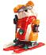 БРАТЦЫ КРОЛИКИ - 1996 продажи в России с 2000 г.
- 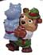 ТЕДДИ НА ЯРМАРКЕ - 1996
- ПОДВОДНАЯ СТРАНА - 1997
- 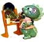 ДИНОС СЕМЕЙСТВО - 1997
- 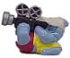 ХИППО ГОЛЛИВУДСКИЕ ЗВЕЗДЫ - 1997
- 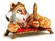 КОТЯТА ЕГИПТЯТА - 1997 продажи в России с 1999 г.
- 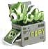 ИНОПЛАНЕТЯНЕ - 1998 продажи в России с 1999 г.
- 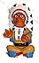 ЗВЕРОБОЙ И ИНДЕЙЦИ - 1998
- 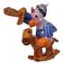 СЭР КОНДОР - 1998
- 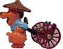 КИТАЙСКИЕ БОБРЫ - 1999
- 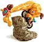 КОМАНДА СУПЕР ЖИРАФОВ - 1999 продажи в России с 2000 г.
- 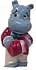 ХИППОС СВАДЬБА - 1999
- 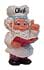 КУХОННЫЕ ГНОМЫ - 1999
- 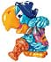 ПОПУГАИ ПИРАТЫ - 2000 продажи в России с 2002 г.
- 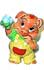 СВИНЬИ ПИНКИ - 2000
- 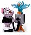 ВАМПИРЯТА - 2000 продажи в России с 2001 г.
- 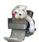 ПРИВЕДЕНИЯ В УНИВЕРСАЛЬНОМ МАГАЗИНЕ - 2001 пресутствуют в российских коллекциях
- 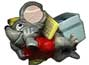 МЫШИ В INTERNET ЛИХОРАДКЕ - 2001
- 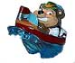 ТЕДДИ ОТДЫХАЮЩИЕ - 2001
- ЗВЕЗДНЫЕ ВОЙНЫ ХИППОС- 2002
- ОФИСНАЯ ПАРТИЯ - 2002
НЕТ ДАННЫХ:
- DER KLEIN KOBOLD PUMUCKL ALS - 1985 LIEGENDER, HANDWERKER, REGENKOBILD, BESSERWISSER, LUSTIGER MUSIKANT, TOLPATSCH, UNSCHULDIGER, NIMMERSATT, FEINSCHMECKER, BLUMENFREUND
- КНИГА ДЖУНГЛЕЙ - 1985 KAA, SHIR KHAN, BAGHERA, MOGLI WITH BANNANAS, DIE NER, GEIER, KING LOUIS, BALOO, MOGLI, GENERAL HATI, BAGHERA STANDING, KLIENER ELEFANT
- DIE TAPSI TORTELS - 1987 TANGO TORTEL, VATER TONI TORTEL, TINA TORTEL, TRIXI TORTEL, TROLLY TORTEL, TROTZI TORTEL, MUTTER TILLY TORTEL, TINI TORTEL
- FANCY FUXIES - 1998 TONI TIEFSCHLAF, HARRY HANDYCAP, DANNY DURCHBRUCH, ULLI UNSCHULD, NIK NEUGIER, FRED FINDIG, BENNY BOHRER, FRITZ FURCHTLOS, RICHTER RECHTSO, AUGUST AUSREDE
- FUNNY FANTEN STARS - 1998 GRAZIA GRAZIELLA, DER GROSSE FANTINI, TONI TROTE, RUDI REISSER, ARNOLD ANGSTHASE, ROSI PROGNOSI, ZACHARIAS ZITTERFREI, RUDOLFO RUSSELINI, FRIDDLIN FROHLICH, PAULI POPCORN
- АСТЕРИКС И РИМЛЯНЕ - 2000 IDEFIX AND TRAGER, FALBALA, OBELIX, VERLEIHNIX, MAJESTIX, MIRACULIX, ASTERIX, LEGIONAIRE CLAUDIUS LAPSUS, CENTURIAN NUMERUS CLAUSUS, LEGIONAIRE MARCUS KONFUS
- ХРАНИТЕЛИ КОЛЬЦА - 2001 GALADRIEL, LEGOLAS, GANDALF, BOROMIR, GIMLI, ARAGORN, ARWEN, FRODO, SAM, MERRY AND PIPPIN
- АНГЕЛЫ И ЧЕРТИ - 2002 MAMMALOCCHIO, TANDEM-DUO, LA TROMPETTA, PEGOMASSIMO, POSTA ALLA DIVAVOLA, FIZZICHAFFO, STAI FRESCOL, RAGNETTO I SCHERZET, MIRA DEL DIAVOLO, GELATO AL SALTO
- BALENOTTI - 2002 PROF CESIRA & GRANCHIOTIPUNGO, LELE RIPETENTE, SAM SEPPIA, MARINO MONELLO, PEPE O'CAFE, PIFFERELLA, NUCCIO CAVALLUCCIO, GIO BASKET, CETTINA NET, RIP RIPASSINO
- FANA D'FOOT - 2002